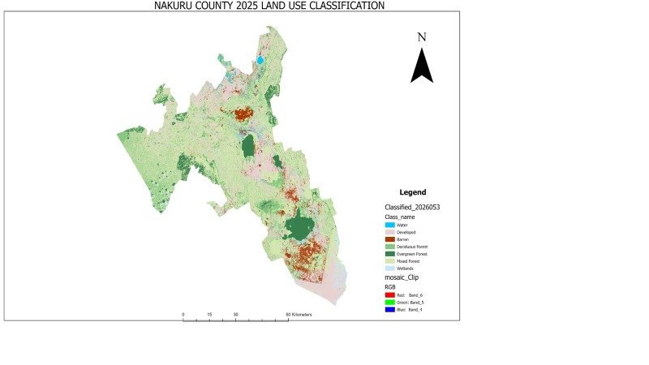

My Projects

GIS & SPATIAL PLANNING
Siana Ward Opportunity Mapping
A GIS-based spatial analysis project focused on identifying economic and development opportunities within Siana Ward, Narok County.
The project explored opportunities related to agriculture, tourism, trade and other economic activities to support informed spatial planning and development decisions.

REMOTE SENSING
Land Use & Land Cover Analysis
A remote sensing project involving the analysis of satellite imagery to understand different land-cover characteristics.
The analysis included vegetation, built-up areas, wetlands and other land-cover classes using raster processing and spatial analysis techniques.
URBAN & REGIONAL PLANNING
Urban Master Planning
A spatial planning project focused on developing planning concepts for an area between Membley, Thika Road and Northlands.
The project considered land use, accessibility, development patterns and opportunities for coordinated urban development.
GIS & CARTOGRAPHY
Thematic Mapping
Development of thematic maps to communicate spatial information and support planning analysis.
The work involved preparing, analysing and presenting geographic data in a clear and understandable cartographic format.
SPATIAL ANALYSIS
Economic Opportunity Analysis
Spatial assessment of economic activities and development opportunities, with a focus on agriculture, tourism, trade and related activities.
The analysis demonstrates how spatial information can be used to identify areas with development potential.
GEOSPATIAL TECHNOLOGY
GIS Data Visualization
Creation and visualization of geographic datasets to communicate spatial patterns, relationships and planning information.
The project demonstrates the use of digital mapping and visualization techniques for presenting spatial information.